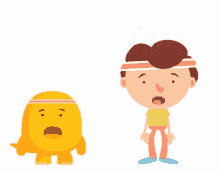
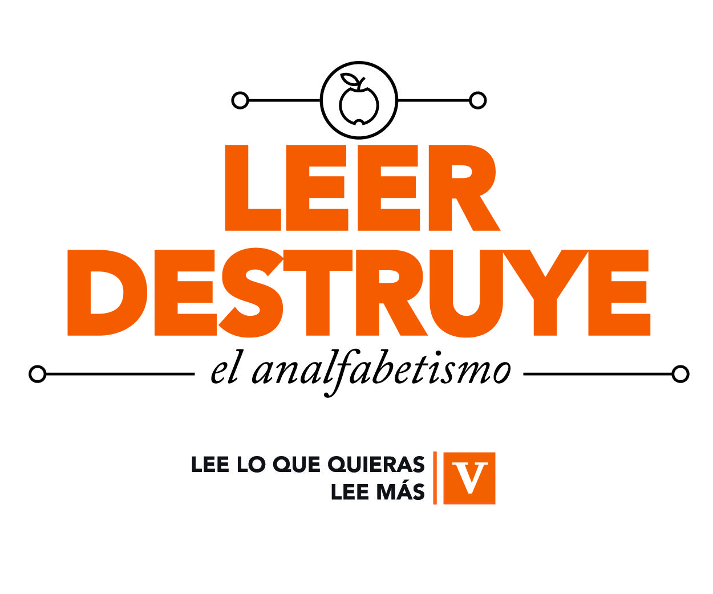
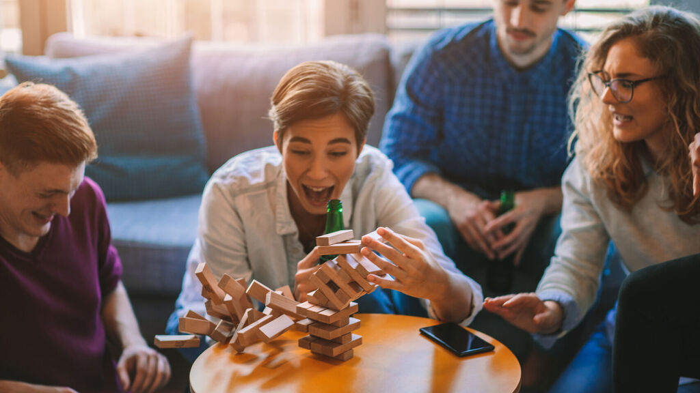
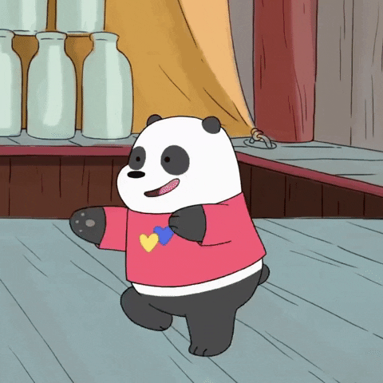

| Pasatiempos en casa |
| En casa |  |
En la escuela |
Consejo 1: Aprender algo nuevo Debe haber algo que siempre has querido aprender y que nunca te has animado por diferentes razones.Pues ahora que tienes un poco más de tiempo libre puedes hacerlo. Hoy en día tienes todos los medios en tus manos para aprender lo que desees, ya sea a través de videos o aplicaciones.
|
|  | Consejo 2: Hacer ejercicio Yo se que es algo que no a todos les agrada pero es indispensable en salud. Puedes aprovechar este tiempo para hacer rutinas de ejercicio, encontraras muchas en youtube solo fijate que sean de las personas correctas y que cumpla con el objetivo al que quieres llegar, ejemplo: puedes trabajar piernas, brazos, abdomen, o aquello que desees. Además, imagina como terminaras la cuarentena si haces ejercicio, no solo más sano sino con un mejor cuerpo atlético. |
Consejo 3: Lee más Se que puede que no te guste, pero no importa que leas siempre y cuando lo hagas.
|
 |
|  | Consejo 4: Juegos de mesa Esta es una buena actividad para pasar tiempo en familia,si antes no lo hacías porque todos estaban ocupados con sus cosas, la cuarentena es un buen pretexto para jugar un rato. Con esta actividad descansas un poco de la tecnología y tienes una interacción real con tu seres queridos, fortaleciendo su unidad y crando días llenos de diversión.
|
Consejo 5: Baila más Pon tu lista de reproducción favorita a todo volumen y baila por toda la casa o en tu habitación. Diviertete inventado coreografías y crea tus propios pasos Aunque no lo parezca, este sencillo acto te beneficiará en varios sentidos. Por un lado, tendrás una nueva actividad en tu lista de cosas que hacer en casa. Por el otro, activará tu cuerpo, quemando calorías y generando endorfinas, o lo que es lo mismo, dándote una sensación de felicidad y alegría. |
 |
| Consejo 6: Crea tu propio karaoke Al igual que el baile, el canto es una buena manera de expresar nuestras emociones. Así que pon una pista y desahogate con las bonitas canciones de señora, con las más actuales o hasta en inglés. No impota que tan bien lo hagas sirve para despejarte un poco. Y recuerda que incluso la cama y el cepillo, pueden ser el mejor escenario y micrófono. Vamos a cantar a todo pulmón. |